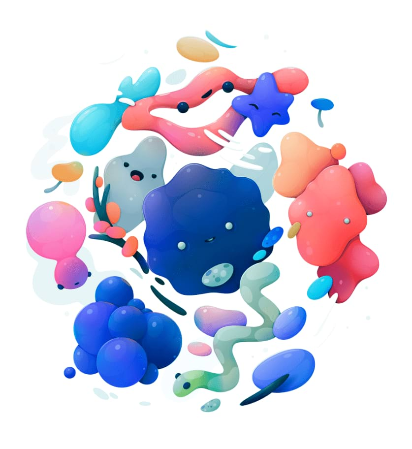

Color Balance adjustment
The Color Balance adjustment provides a way to modify the contribution of particular colors to a set tonal range.


The Color Balance adjustment provides a way to modify the contribution of particular colors to a set tonal range.
The following settings can be adjusted: